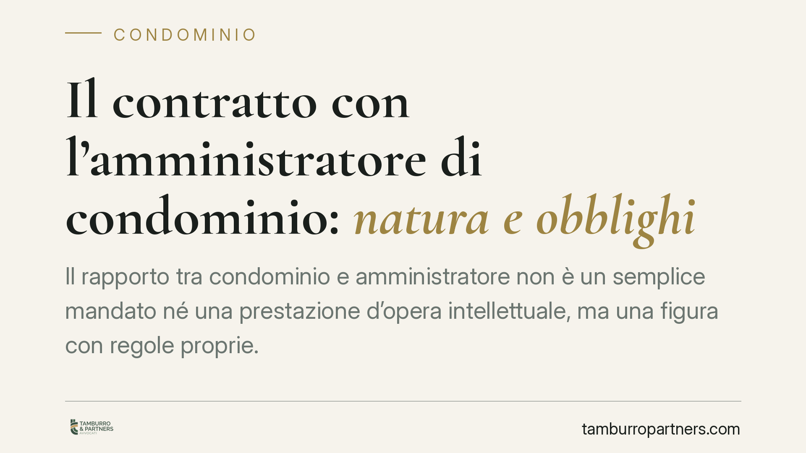

Il contratto con l'amministratore di condominio: natura e obblighi
Il rapporto tra condominio e amministratore non è un semplice mandato né una prestazione d'opera intellettuale, ma una figura con regole proprie. La Cassazione torna sul punto chiarendo quando la nomina è nulla, come va indicato il compenso e quali requisiti abilitanti servono. Per i condòmini e per gli stessi professionisti, conoscere questi confini evita delibere impugnabili e contenziosi sul pagamento.

Il fatto e perché conta
La disciplina del contratto con l'amministratore di condominio resta terreno di frequente contenzioso. La Corte di Cassazione, Sezione II, è tornata di recente a precisare i contorni di questo rapporto: dalla natura giuridica dell'incarico alla validità della nomina, fino alla responsabilità per negligenza.
Il punto centrale è che il contratto di amministrazione condominiale ha caratteri propri. Non coincide con il mandato puro né con il contratto d'opera intellettuale, pur prendendo in prestito regole da entrambi. Questa autonomia ha conseguenze pratiche concrete, soprattutto sul compenso e sui requisiti del professionista.
Inquadramento normativo
Il riferimento primario è l'art. 1129 cod. civ., riformato dalla L. 220/2012, che regola nomina, revoca e obblighi dell'amministratore. Il comma 14 dispone che l'amministratore, all'atto dell'accettazione dell'incarico e del suo rinnovo, deve specificare analiticamente, a pena di nullità della nomina, l'importo dovuto a titolo di compenso. La giurisprudenza di legittimità interpreta la norma in senso rigoroso: non basta un rinvio generico, serve l'indicazione delle voci che compongono il corrispettivo, comprese le attività straordinarie.
I poteri e i doveri gestionali discendono dagli artt. 1130 e 1131 cod. civ., che delineano le attribuzioni dell'amministratore e la sua legittimazione a rappresentare il condominio. Sul piano dei requisiti soggettivi opera l'art. 71-bis disp. att. cod. civ., che fissa le condizioni per poter svolgere l'incarico: godimento dei diritti civili, assenza di condanne per determinati reati, assenza di protesti, diploma di scuola secondaria superiore e frequenza di corsi di formazione iniziale e periodica. Per i professionisti non ordinistici resta sullo sfondo la L. 4/2013 in tema di professioni non organizzate.
La natura del contratto e le ricadute
Qualificare il rapporto come figura tipica autonoma non è un esercizio teorico. Dalla natura discendono le regole applicabili alla responsabilità, alla risoluzione e al compenso.
La Cassazione conferma che l'amministratore risponde a titolo di diligenza professionale: non basta la buona fede, occorre la condotta attesa da un operatore qualificato. La negligenza nella gestione contabile, nel recupero dei crediti o nella convocazione dell'assemblea può fondare la revoca per gravi irregolarità e un'azione risarcitoria del condominio.
Sul compenso, la linea è netta. La mancata specificazione analitica travolge la nomina, non solo la clausola sul corrispettivo. Ciò significa che una delibera di nomina priva dell'indicazione puntuale del compenso è esposta a nullità, con effetti a catena sulla regolarità degli atti successivi.
Implicazioni pratiche
Per il condominio, la conseguenza più rilevante è la fragilità di nomine approvate con formule generiche. Una delibera che richiama "il compenso d'uso" o rinvia a un preventivo non allegato rischia l'annullamento su impugnazione di un singolo condòmino.
Per l'amministratore, la posta in gioco è doppia: la validità dell'incarico e la certezza del proprio credito. Un compenso non specificato analiticamente può diventare non esigibile, aprendo contenzioso sul dovuto. A ciò si aggiunge l'esigenza di documentare il possesso e il mantenimento dei requisiti ex art. 71-bis, incluso l'aggiornamento formativo periodico.
Cosa fare in concreto
- Verificate la delibera di nomina: controllate che il verbale riporti l'importo del compenso voce per voce, distinguendo attività ordinaria e straordinaria.
- Allegate il preventivo analitico al verbale assembleare e richiamatelo espressamente nella delibera, evitando rinvii indeterminati.
- Documentate i requisiti ex art. 71-bis: conservate attestati di formazione iniziale e periodica, autocertificazioni e documentazione sull'assenza di cause ostative.
- Formalizzate l'accettazione dell'incarico per iscritto, con indicazione di durata, attribuzioni e modalità di rendicontazione.
- In caso di contestazioni sul compenso o sulla gestione, consigliamo di far valutare la regolarità della nomina prima di assumere iniziative, assembleari o giudiziali.
Conclusione
Il contratto con l'amministratore richiede attenzione formale fin dal momento della nomina. La specificazione analitica del compenso e la verifica dei requisiti abilitanti non sono adempimenti burocratici, ma condizioni di validità ed efficacia del rapporto. Trascurarli espone entrambe le parti a conseguenze onerose.
---
*Contributo informativo a cura di Tamburro & Partners - Avv. Giuseppe Tamburro. Non costituisce parere legale.*
Ogni condominio ha una storia a sé.
Se gestisci un'amministrazione e vuoi un confronto su una specifica questione condominiale, scrivi allo studio. Ti rispondiamo entro un giorno lavorativo.